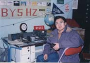
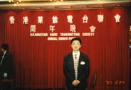

1983年我读小学四年级了，隔壁比我高两级的周做了一只矿石收音机，拿在楼道里听，看得我好羡慕。我也想做，可是作矿石机要用高阻耳机，我没有。父亲那张大大的工作台里面那满满两抽屉的元件，早就被我偷偷翻了个遍，一五一十地点算过了。不过，那时候，我已经瞒着父亲，把他的《无线电》杂志都翻着看过了。虽然只是找自己看得懂的文章，至少什么电阻、电容、晶体管之类的名词都不陌生，也知道“为什么单管机偏流调得不好就不响了”。所以我就去杂志里找电路，找元件我都有的。就找到一个双管机的电路，因为有一个射级跟随器做音频放大，可以接低阻耳机。那时候，父亲对我玩这些东西，还不象现在这样反对得厉害，不过也不至于会把线路板和元件都准备好了让我来做。自己去找纤维板；用钉子打孔；去校办工厂讨铆钉；拿榔头打铆钉（所以都是不通的:(）。几个星期过去了，我的两管机终于做出来了。我把要好的小朋友叫到家里来，一个一个排队试听 :)。那块 板子现在还在，不过那上面已经拆拆-装装过好多小电路了。我就是这样装了就拆、拆了又装。在杂志上找元件我都 有的东西来装，当然总是失败多、成功少。
就在这些拆拆-装装中，我看到了一种叫做“步话机”的东西。对无线通讯的想象，一直憧憬着我。但是，“公安局 要来抓的”是一个十几岁的孩子所能够有的理解。所以，梦始终还是梦。但是，这个梦很快就到来了。
 1988年高一那年的暑假，放假前，英语老师找到我，说市体委办了一个她也搞不清楚的什么学习班，说对英语口语有帮助，要我去参加。一向听话的我，就去了。嘿嘿，原来是业余电台的学习班呵~。我就像哲学上讲的，一下子找到了“心灵的家园”。或者就像电影里常见的镜头：“同志，我可找到组织了。” :) 我很自然的觉得那本来就是我的，我就是他的。那是杭州市体委业余电台BY5HZ办的学习班，在教练冯新善BD5HFA的指导下，我们很快就开始on air了。不记得第一次做QSO的感受了，可能没有太特别的感受吧，因为觉得这些是自然而应该的。那时候还没有 开放个人电台，只有集体电台。杭州只有一座集体电台，位置在杭州西南面的六和塔，已经是远离市区的地方，因为那时候在城市里面还不能设立100W以上的电台。差不多每个周末，我都要骑45分钟的自行车，去玩电台。
1989年我考了集体电台个人操作证书，拿到了BZ5HAG的呼号。1993年第一次开放个人电台考试，我考到了“三级HF报”的证书，几经周折后，拿到了现在这个BG5HAG的呼号。今年又考到BD5HAG二级呼号。 
BG生涯从1部简单的F30-5手机（29.60单频点FM机）开始，其间曾向BD5HAA借了HT115（15米10W
SSB/CW电台）来玩，现在是一部IC706MKII、一部AZ-11、一部FT-50R和一部MR-146在玩。平时主要是在21MHz玩CW，偶尔到7MHz和国内的朋友聊聊。最近29MHz传播不好，本来是最喜欢的地方，最近去的少了。
{kind=link}
{kind=link}